Kovové konštrukcie · Prešov · od roku 2006
Kovové konštrukcie od výkresu po montáž.
Vyrábame a montujeme oceľové konštrukcie, opláštenie a technologické celky pre priemysel – na Slovensku aj v zahraničí.
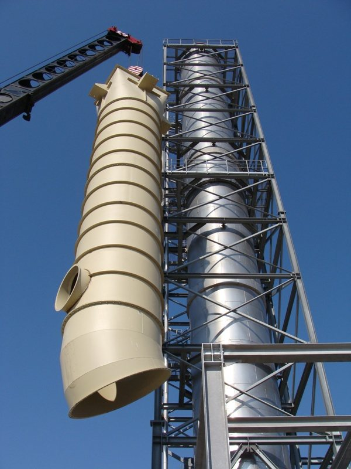
- SK Prešov · Košická 7489
- RS · HU · RO stavby v zahraničí
- ISO 9001 · 14001 · OHSAS 18001 certifikáty TÜV SÜD (2009)
01 — Profil
Od roku 2006 vyrábame oceľ, na ktorú sa dá postaviť celá prevádzka.
Spoločnosť KOVOMONT-PO, s. r. o., vznikla 23. 6. 2006 a sídli na ulici Košickej v Prešove. Hlavnou činnosťou firmy je výroba kovových konštrukcií.
V relatívne krátkej dobe sa firma dokázala presadiť v tvrdom konkurenčnom prostredí vďaka kvalite svojej práce, expresnosti dodávok a profesionalite prístupu k zákazníkovi. Rast objemu zákaziek nám umožnil rozširovať technologický a výrobný potenciál.
- Založené
- 23. 6. 2006
- Sídlo
- Košická 7489, Prešov
- Živnostenské oprávnenie
- OŽP-Z/2006/05055-2/CR1
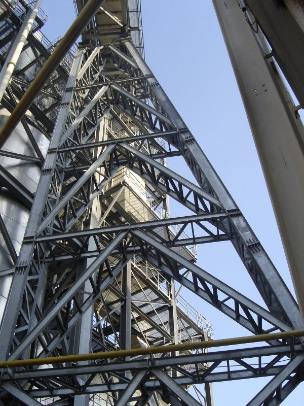
02 — Čo robíme
Najčastejšie výrobné činnosti
- 01
Výroba kovových konštrukcií a ich častí
Nosné oceľové konštrukcie hál, plošín, veží a technologických celkov – vlastná výroba v Prešove.
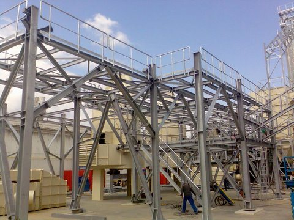
- 02
Montáž technologických zariadení
Montáž strojnej technológie a potrubí priamo na stavbe (okrem elektrických častí).
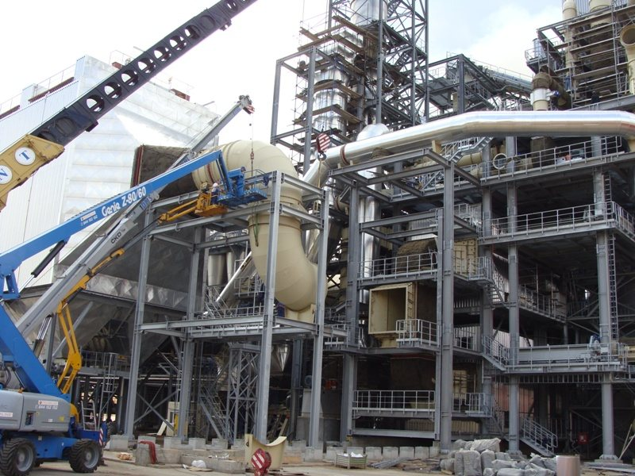
- 03
Zámočnícke práce
Atypické oceľové prvky, výrobky podľa výkresu aj podľa rozmerov zo stavby.
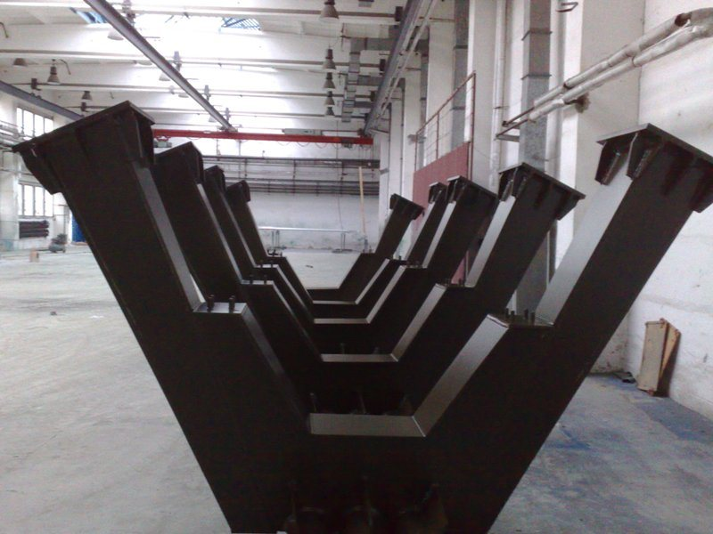
- 04
Zváračské práce
Zváranie v dielni aj pri montáži na mieste.

- 05
Montáž kovových obvodových plášťov
Opláštenie hál a priemyselných objektov – stien aj striech.
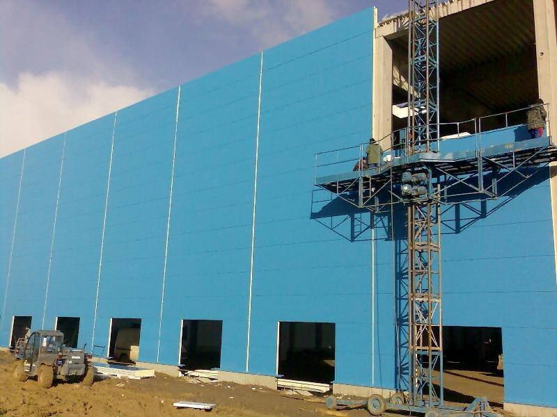
- 06
Výroba a montáž svetlíkových systémov
Svetlíky do striech výrobných a skladových hál.
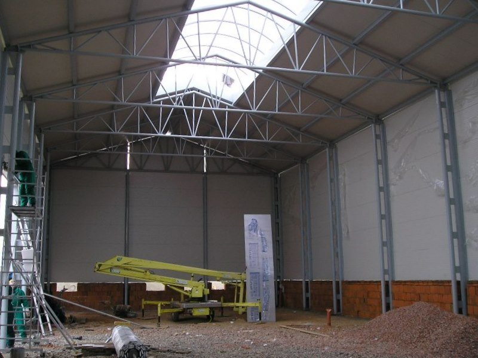
- 07
Projektová dokumentácia
Spracovanie dielenskej a statickej dokumentácie k vyrábaným konštrukciám.
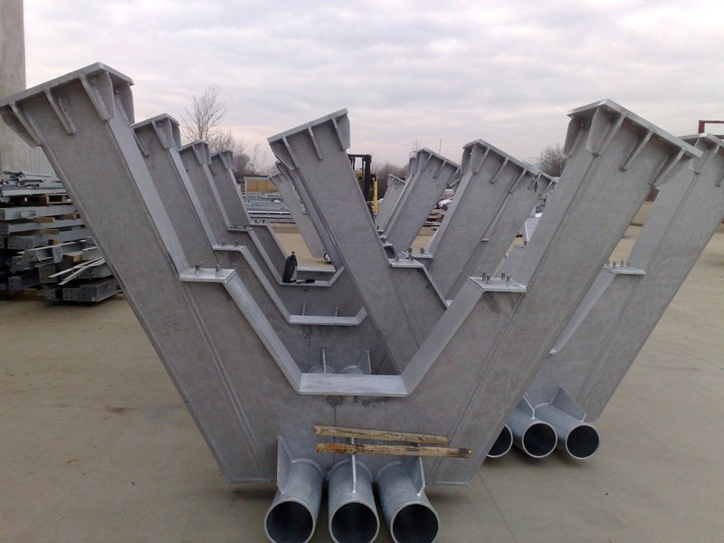
03 — V číslach
04 — Referencie
Stavby, ktoré stoja.
- 01Srbsko
Výroba a dodávka OK – Kronospan Lapovo
Investor: Contiplus AG
- 02Maďarsko
Dodávka a montáž OK – Falco, Szombathely
Investor: Contiplus AG, Cyprus
- 03Rumunsko
Montáž OK a potrubia – Kronospan Sebeš
Investor: Kronospan Rumunsko
- 04Slovensko
Výroba a montáž OK, dodávka a montáž strešného a obvodového plášťa – COFIN Prešov
Investor: Cofin, a. s.
- 05Slovensko
Dodávka a montáž OK – Bučina DDD, Zvolen
Investor: Bučina DDD, s.r.o. Zvolen
- 06Slovensko
Dodávka OK a opláštenia vrátane montáže
Investor: MIVA, Spišská Nová Ves
- 07Slovensko
ČOV Poprad
- 08Slovensko
Priemyselný park Poprad GGP
- 09Slovensko
Výroba a dodávka deviatorov – diaľnica D1 Fričovce – Prešov
Investor: Isprim, s.r.o.
- 10Slovensko
Výroba a montáž mosta cez rieku Myjava – Šajdíkove Humence
Investor: Art-Eko, s.r.o. Bratislava
05 — Zo stavieb
Fotografie z našich montáží. Kliknutím zväčšíte.
06 — Technológie
Vlastný strojový park
Výrobu robíme vo vlastnej hale v Prešove. Potiahnite galériu do strany.
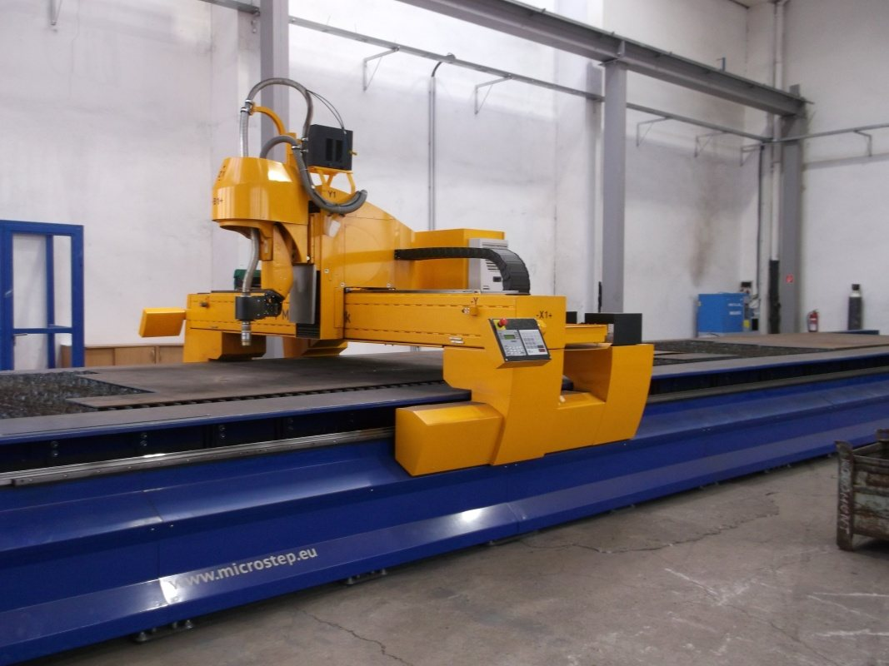
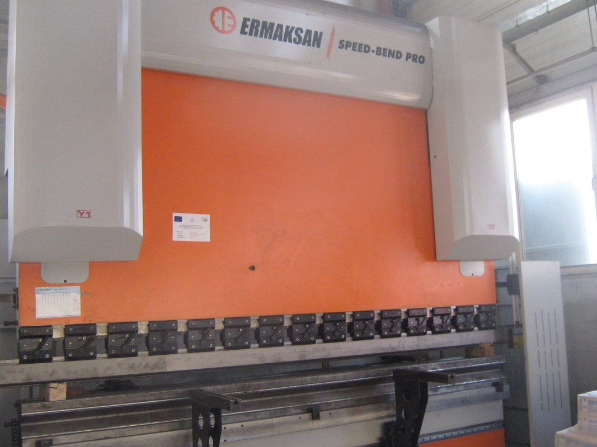
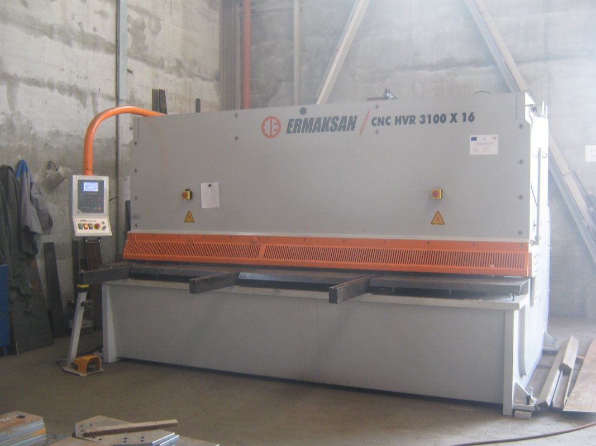
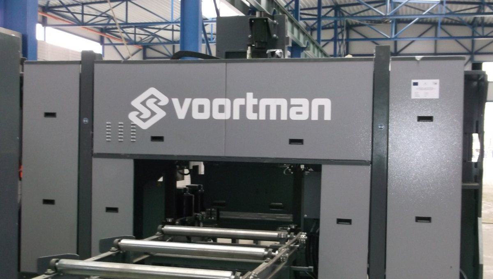
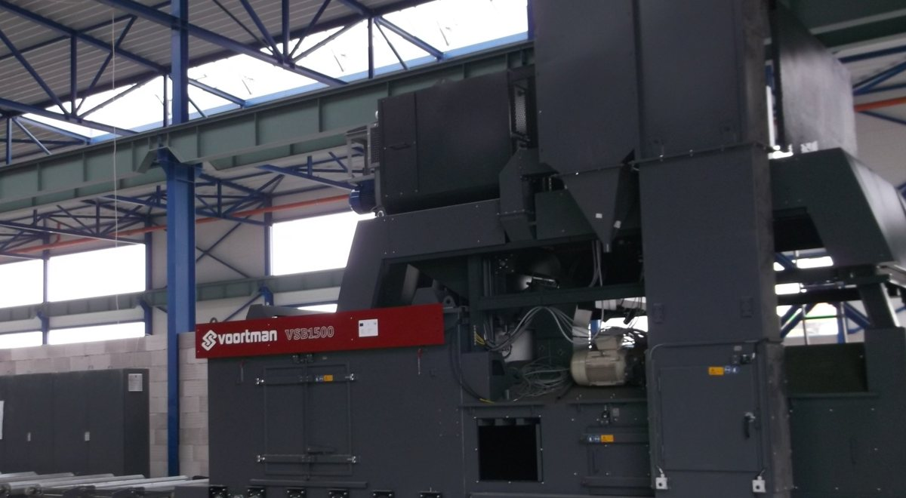
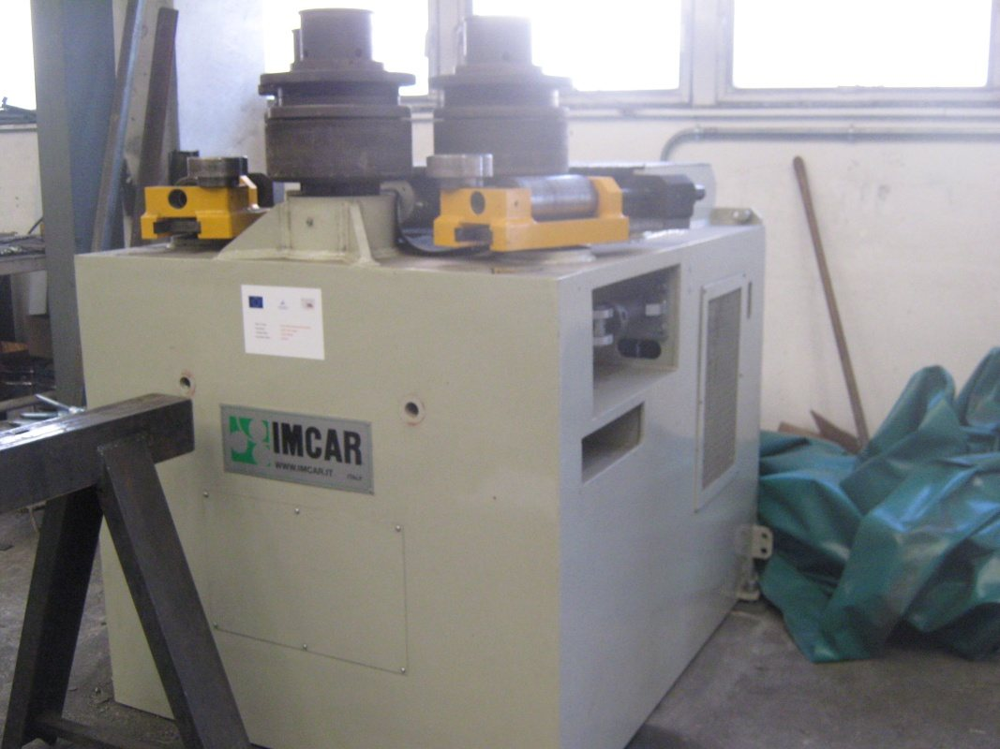
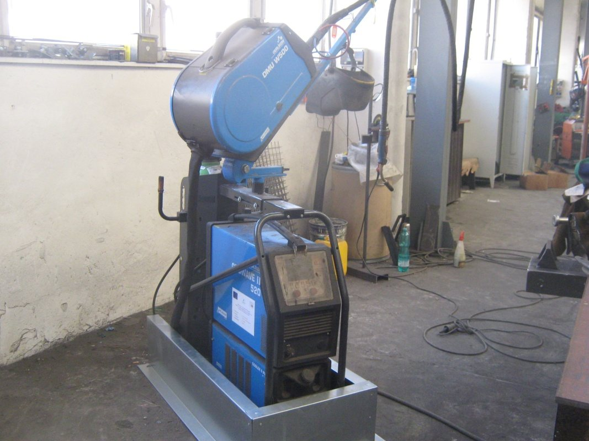
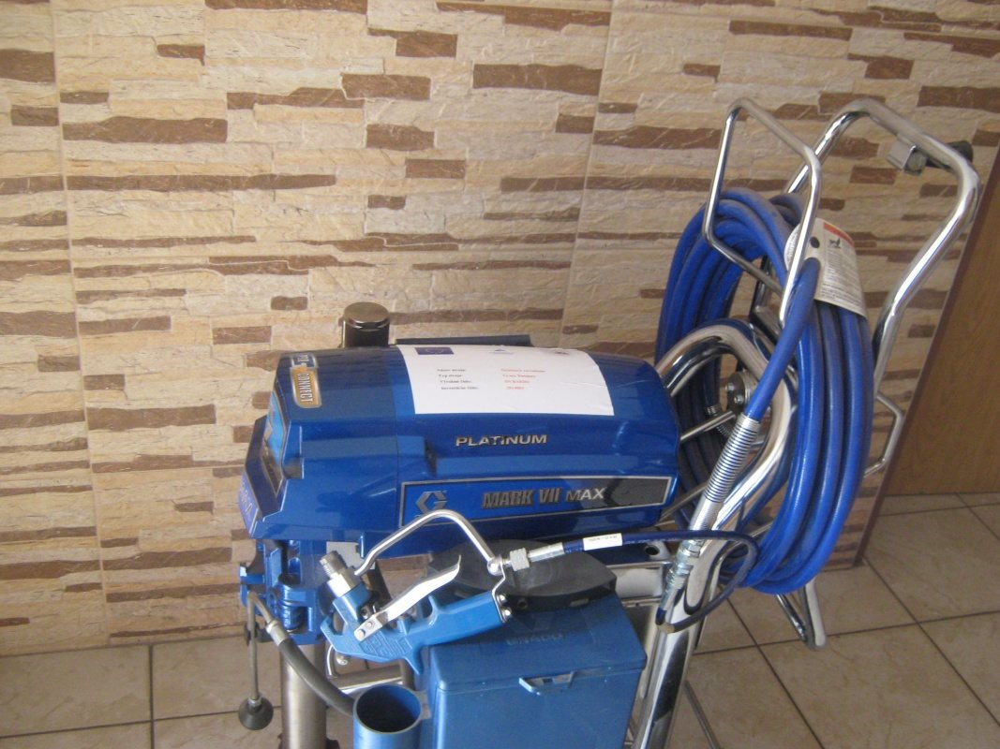
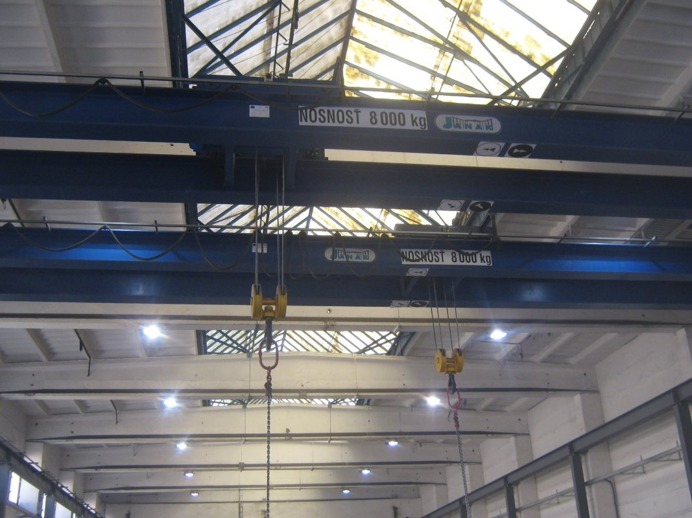
Technologické zariadenia a vybavenie
- Hydraulické nožnice CNTA 3150/16Aplechy do hrúbky 10 mm
- Pásová píla BOMAR transverse6200 × 410
- Kombinované CNC rezacie zariadenieRUR 2500GP
- Stĺpové vŕtačky1 ks
- Radiálna vŕtačkaVR4
- BrúskyMETABO, BOSCH, HILTI
- Okružná pílaXtreme 1750 W
- Pásová brúskaGrit 7,5 × 200
- Zváracie poloautomatyFOR MIG 459
- ZváračkyFronius Transpocket 1500
- KompresorySCHNEIDER
- Vysokotlakové striekacie zariadenieSTORCH AIRLESS SL 1100
- Montážna plošinaMP 14 AVIA
- Valník—
- Vysokozdvižný vozíkBV 3222
- Halový žeriav5 t × 16,25 m
- Osobné dodávkyDUCATO, 9-miestne
- Vysokozdvižný vozíkHyster 5000
- Excentrický lis50 t
07 — Certifikáty
Systémy manažérstva overené TÜV SÜD Slovakia
V roku 2009 sme získali certifikáty pre výrobu a montáž oceľových konštrukcií a nosných oceľových prvkov pre mostné konštrukcie.
08 — Dopyt
Máte výkres alebo rozmery? Pošlite nám ich.
Popíšte, čo potrebujete vyrobiť alebo namontovať, a priložte výkres, náčrt či fotku. Ozveme sa s nacenením.
Sídlo firmy
KOVOMONT-PO, s. r. o.
Košická 7489
080 01 Prešov
Slovenská republika
Korešpondenčná adresa
P. O. BOX 42
080 05 Prešov
kovomontpo@kovomontpo.sk+421 51 771 0871 tel. / fax+421 51 773 1058